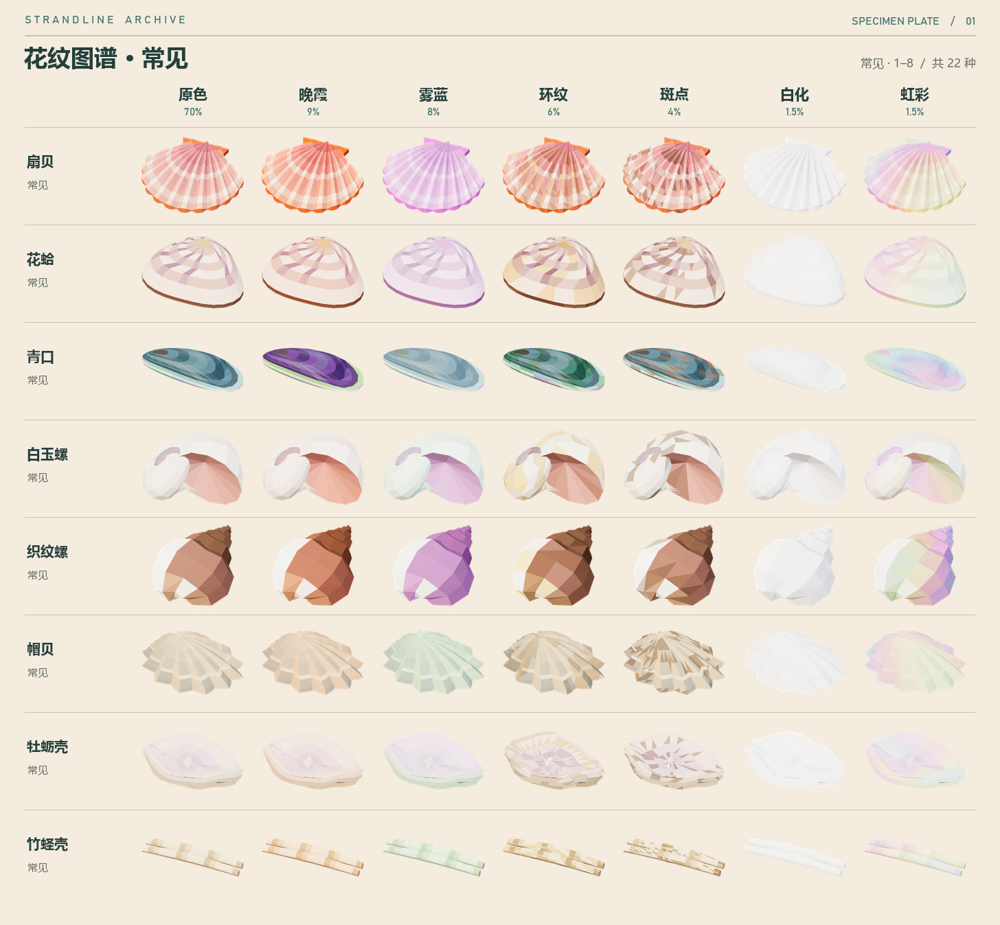
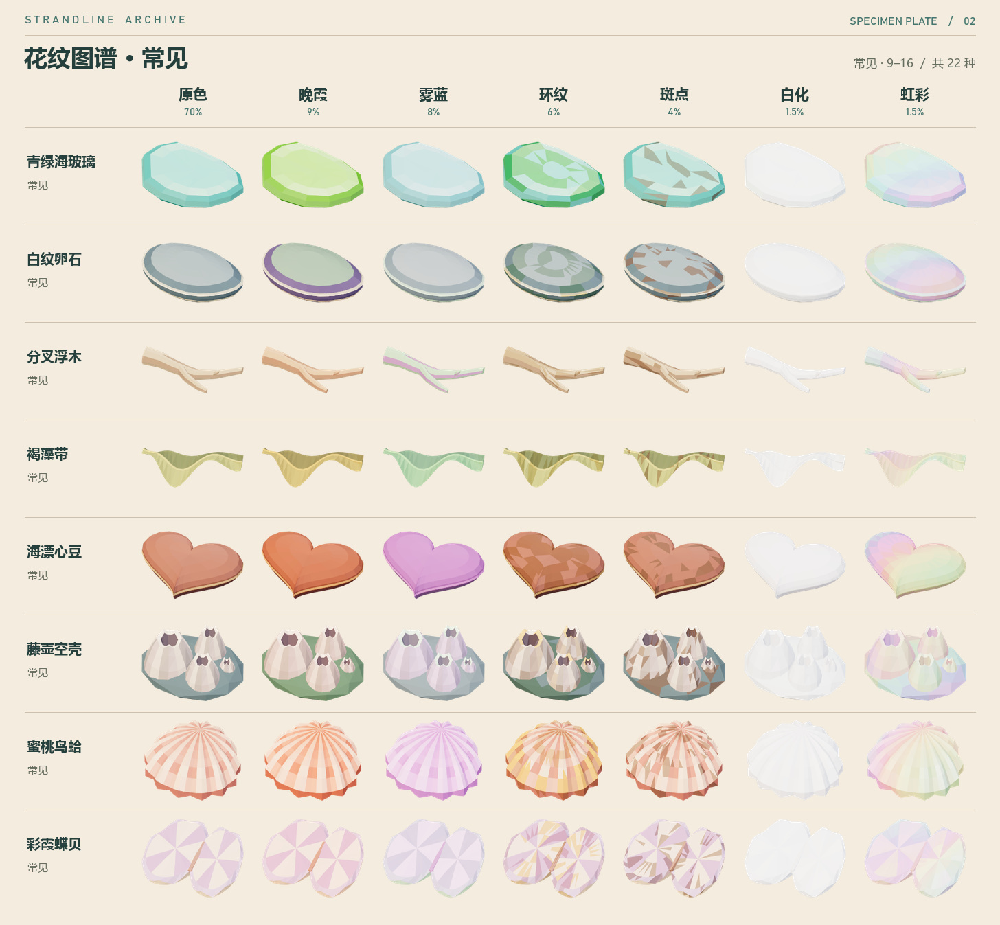
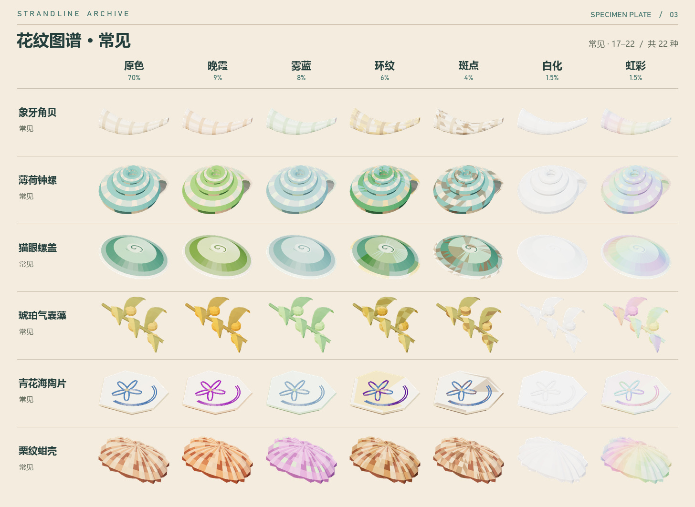
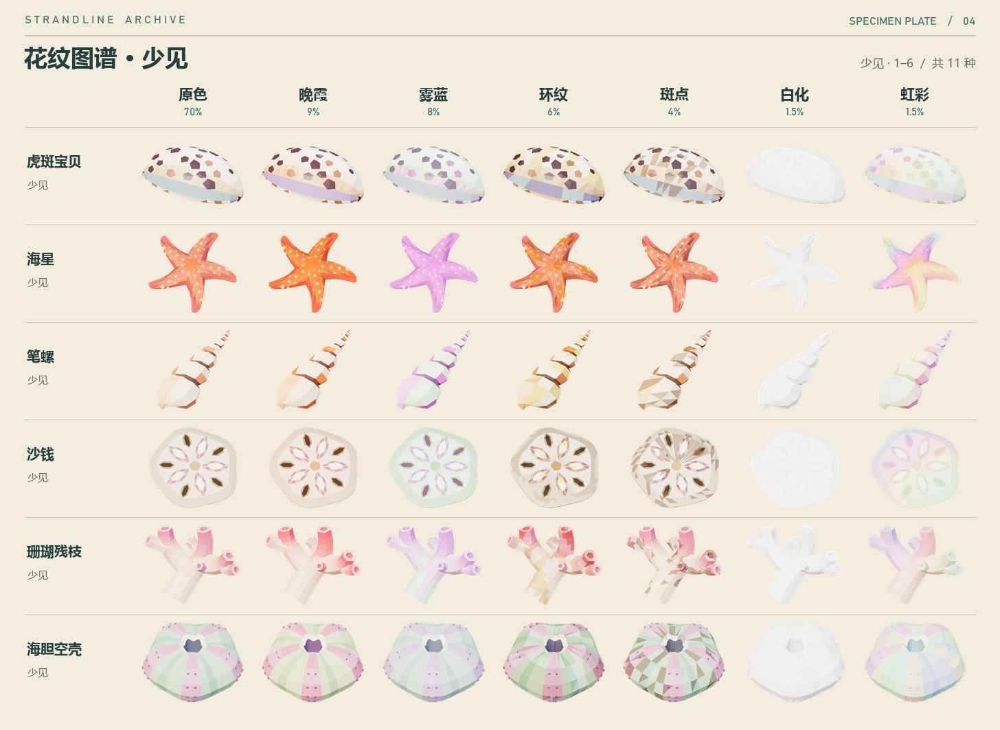
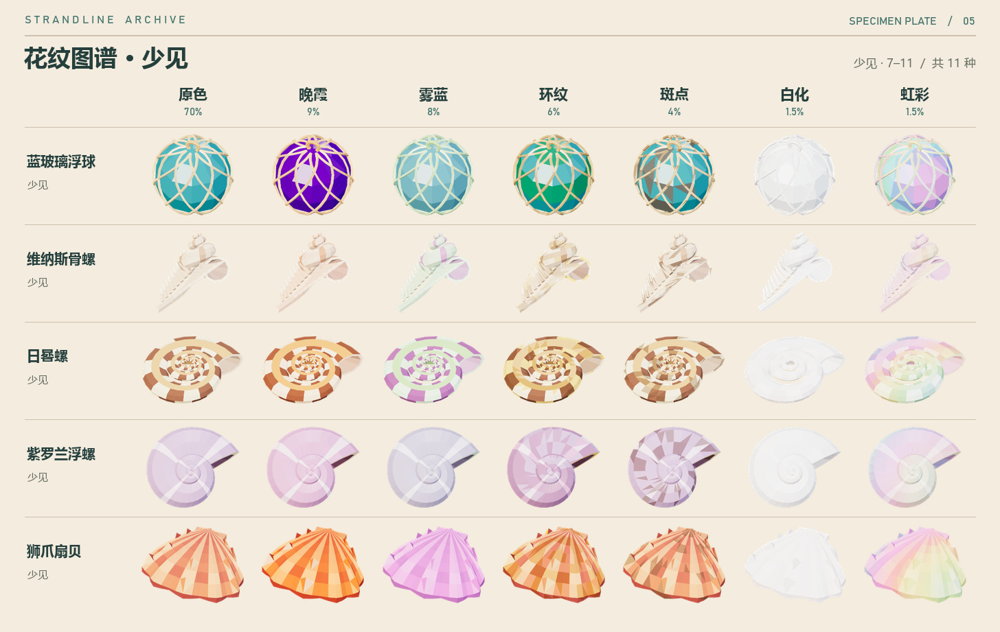
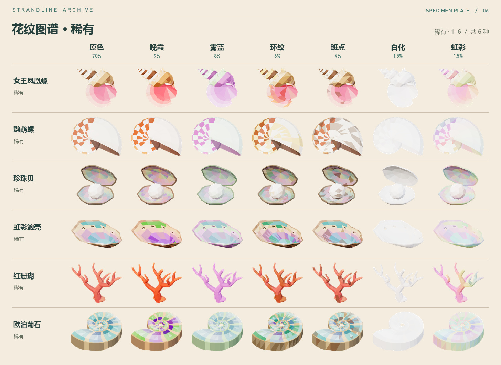

39 种收藏品 × 7 款外观，按行对照。原色 70%、晚霞 9%、雾蓝 8%、环纹 6%、斑点 4%、白化和虹彩各 1.5%。同款花纹在不同底色上效果会不同。
五种垃圾不抽花纹。点击图版可看原图。
扇贝、花蛤、青口、白玉螺、织纹螺、帽贝、牡蛎壳、竹蛏壳

青绿海玻璃、白纹卵石、分叉浮木、褐藻带、海漂心豆、藤壶空壳、蜜桃鸟蛤、彩霞蝶贝

象牙角贝、薄荷钟螺、猫眼螺盖、琥珀气囊藻、青花海陶片、栗纹蚶壳

虎斑宝贝、海星、笔螺、沙钱、珊瑚残枝、海胆空壳

蓝玻璃浮球、维纳斯骨螺、日晷螺、紫罗兰浮螺、狮爪扇贝

女王凤凰螺、鹦鹉螺、珍珠贝、虹彩鲍壳、红珊瑚、欧泊菊石
